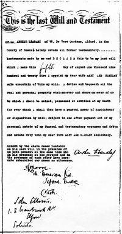

|
Arthur Handley's Will, made in 1925
by John Winsor, April 2009.
|
|
I applied in person to the Probate Registry in High Holborn for a copy of Arthur's Will. At the door of the building I was searched by security guards with metal detectors. The clerk told me to return later to collect the Will. So I returned in the afternoon. I must admit that I did so with some trepidation. Was I about to open a Pandora's Box containing information leading me to the Cashier or, rather, to her progeny? But upon sight of the Will I realised that nothing could be more innocuous. I was uncertain whether to be pleased or sorry.  Here follows a transcription of Arthur's Will This is the last Will and Testament of me, ARTHUR HANDLEY of 72, De Vere Gardens, Ilford, in the County of Essex. I hereby revoke all former testamentary instruments made by me and DECLARE this to be my last Will which I make this fifth day of August one thousand nine hundred and twenty five. I appoint my dear wife MARY ANN HANDLEY sole executrix of this my Will. I devise and bequeath all the real and personal property what-so-ever and where-so-ever of or to which I shall be seized, possessed or entitled at my death (or over which I shall then have a general power of appointment or disposition by Will) subject to and after payment out of my personal Estate of my funeral and testamentary expenses and debts and Estate Duty unto my dear wife MARY ANN HANDLEY absolutely. The Register of Probates records the gross value of Arthur's estate to be £1541-5s-9d. According to Google this figure would represent about £154,000 in the currency of 2023. My notes: 1. This is the most simple Will possible and there is no bequest to Arthur's daughters. Had Arthur survived Mary the Will would have been useless. He would have needed a new Will or would have died intestate. 2. Arthur gives his address as 72 De Vere Gardens, Ilford. I am under the impression that he never lived there. If Arthur owned the house in 1925 this would suggest that, following the family rift in about 1922, Arthur made provision for the welfare of Mary and Daisy. 3. The Witnesses give Ilford addresses, so Arthur used a solicitor in Ilford. I presume he travelled there on that day specially to make the Will. I speculate upon the purpose of this simple Will. Was it made in support of a possible conciliation in which Arthur would move into the house in De Vere Gardens? |